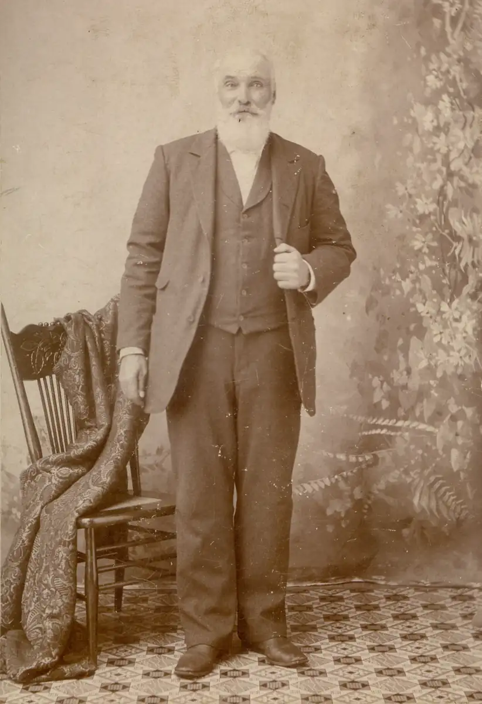

Home / Blunks / 003 Blunk Lark and Eva / blk003-00001
blk003-00001
← Return to 003 Blunk Lark and Eva
← Prev blk003-00002 →
Captioned: "Great Grandpa Kline." Dad added: "(Anna Krehbiel's) c. 1900." The Kline's are linked to the Blunks through the marriage of James L. Wood to Emma Kline in 1892. Evangeline Wood then married Lark Blunk in 1915. Scanned from an uncredited "cabinet card."

Actual size: 3.81" × 5.56" · Scanned at: 600 dpi · 7.62 MP (2284×3335) · Image date: 7 Jul 2005 · Comment date: 1 May 2006
Copyright © 2005–2026 Thomas Krehbiel. Images are freely distributable for personal use. For more information about these images contact Thomas Krehbiel (tkrehbiel@gmail.com).
Photos were scanned at either 300dpi or 600dpi, depending on the quality of the photograph. Slides were scanned at 1800dpi. Documents were scanned at 100dpi or 150dpi. Photoshop enhancements: most images have had their contrast improved. Some color photos were corrected to restore color balance. Some blurry images were mildly sharpened. Occasionally dust, scratches, and blemishes were removed digitally.
{kind=link}